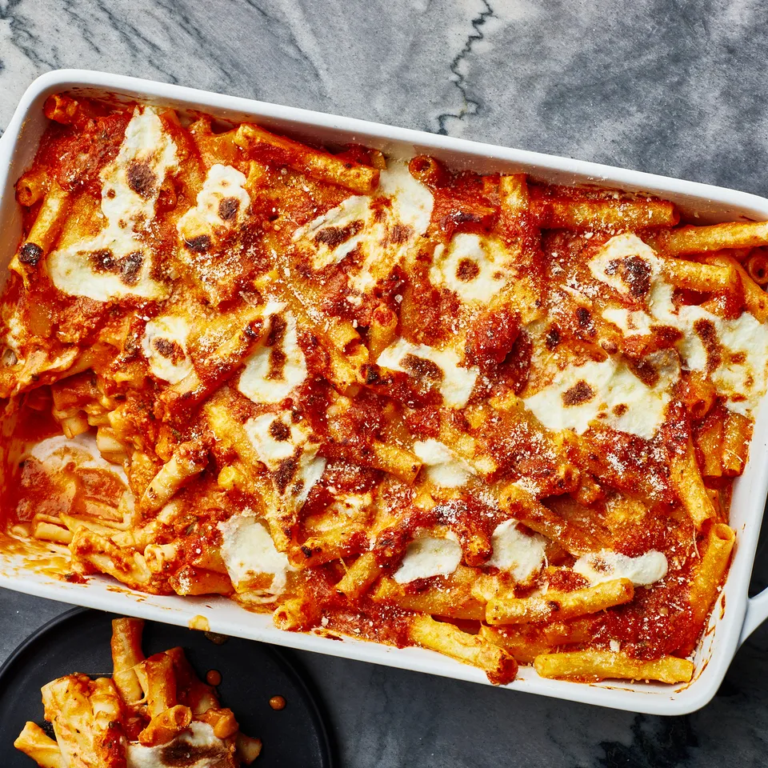

Home
Baked Ziti

The go birthday dinner in my family. Its relatively simple to make and every body loves it.
Ingredients
- 2 tables spoons butter
- 2 table spoons flour
- 2 1/4 cups whole milk
- 2 1/2 cups grated parmesean
- 1/4 cup olive oil
- 1 oniom
- 4 garlic
- 2 tablespoons tomatoe paste
- 1 28oz can and 1 14oz can whole peeled tomatoes
- 1/4 cup chopped basil
- 1 pound ziti
- 1 pound mozzarella
Steps
- Heat butter in a medium saucepan over medium until foamy. Sprinkle flour over and cook, whisking constantly, 1 minute. Gradually whisk in warm milk. Bring mixture to a boil, reduce heat, and simmer, whisking often, until béchamel is thickened to about the consistency of heavy cream and no longer feels grainy when rubbed between your fingers, 8–10 minutes (thoroughly cooking the mixture ensures a creamy sauce and eliminates any raw flour flavor). Remove from heat and add 2 cups Parmesan, whisking until cheese is melted and sauce is smooth. Set aside.
- Heat oil in a large saucepan over medium-high. Cook pancetta, stirring often, until golden brown, about 2 minutes. Add onion, garlic, and red pepper flakes; season with salt and pepper. Cook, stirring often, until onion is golden and soft, 8–10 minutes. Add tomato paste and cook, stirring, until slightly darkened, about 2 minutes.
- Add whole peeled tomatoes, crushing with your hands as you go, and season with salt and pepper. Bring sauce to a simmer and cook, stirring often, until slightly reduced and flavors have melded, 20–25 minutes. Let cool slightly, then transfer to a blender; pulse until mostly smooth (or use an immersion blender and purée directly in pot). Stir in basil and season with salt and pepper.
- Meanwhile, preheat oven to 350°. Cook pasta in a large pot of boiling salted water, stirring occasionally, until very al dente, about 5 minutes (the pasta will continue to cook in the oven); drain
- Transfer reserved béchamel to a large bowl; add pasta and mozzarella and toss to combine. Add all but 1 cup tomato sauce and gently fold mixture a few times, leaving streaks of béchamel.
- Transfer pasta mixture to a 13x9-inch or other 3-quart baking dish, dollop with remaining tomato sauce, and scatter remaining Parmesan over pasta. Bake until mozzarella is melted and sauce is bubbling around the edges, 15–20 minutes
- Heat broiler. Broil until pasta and cheese are dark brown in spots, about 4 minutes. Let pasta sit 5 minutes before serving.